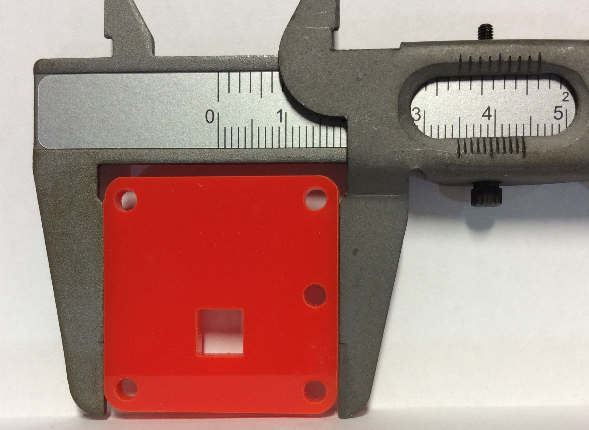

The LED Torch - Extension Activity
1 Extension Work
Introduction
- If you excel at Systems & Control, you might find yourself finishing your LED Torch well before your peers.
- The following Extension activity will allow you to learn some new engineering skills and to practice your modelling skills.
- There will be no badges awarded for this activity. The rewards is the work itself.
Learn It
- For this task, you're going to learn how to accurately measure the dimensions of the LED torch housing.
- Once you have the dimensions, you can then have a go at creating the parts in SolidWorks and making the housing as an assembly.
Learn It
- If we need to measure the width of a part, there are several tools we could use.
- The simplest tool would be a ruler

- The problem with a ruler, is it's accuracy.
- You could measure an object and know it was between 52mm and 53mm in length, but your best guess could only be 52.5mm
- To be able to measure lengths smaller than a millimeter, we need to use another device.
Learn It
- These are Vernier Callipers

- Vernier Callipers allow us to measure lengths to the nearest 0.1mm (or sometimes even smaller).
- They use a scale called a Vernier Scale. Ask your teacher for a pair of Vernier Callipers, so you can learn how to use them.
Try It
- Here is an animation showing how to use the Vernier Scale.

- The basic concept is to match up the marks on the two scales, to determine the number of 0.1mm increments to add to your initial reading.
- Let's have a go at doing this with the LED Torch housing.
- Grab one of the parts for the LED torch
-Adjust the Vernier Callipers so that the jaws fit tightly around the part, as shown below. 
- The scale is fairly simple to read - have a look at this close up.

- Hopefully you can see in the picture above, that the part is greater than 3cm in length.
- If you look to where the first graduation of the bottom scale meets the top scale, you'll be able to see that we can more accurately describe the part as being 3.4cm in length.

- Now we look across at the bottom scale, and see which of the graduations most closely lines up with the upper scale's graduations

- Here we can see that the ninth graduation is the one that matches, so that makes the dimension 3.49cm, or 34.9mm
Learn It
- If you look at the animation below, you can see the whole process of measuring using Vernier Calipers

Try It
- We can also use the Vernier Callipers to measure the size of holes in the part.
- Look at the image below, showing how to measure the square hole in the top of the drawer alarm.

Try It
- On paper, sketch rough diagrams of all the parts for the LED torch housing.
- Now use Vernier Callipers to measure all the dimensions of the parts. (The small holes have a 3mm diameter)
Design It
- You've used SolidWorks before, so this shouldn't be too difficult for you.
- Using SolidWorks, create sketches of all the parts.
- Extrude each part by 3mm
- Create an assembly of the four parts.